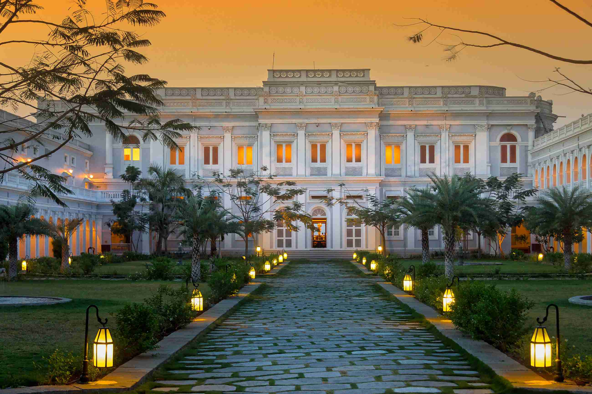
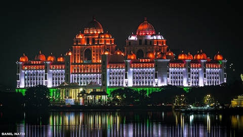
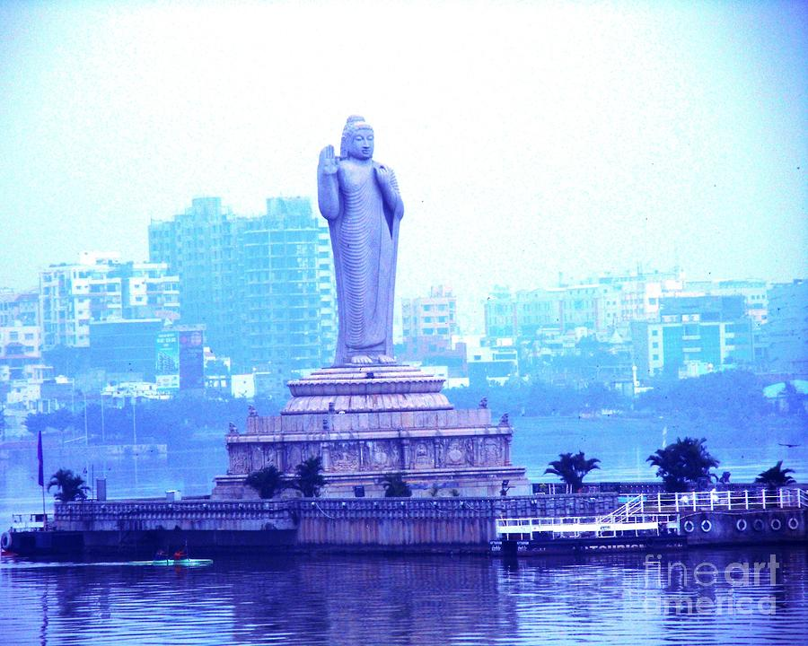

The Salar Jung Museum is one of the largest art museums in the world. It houses a vast collection of rare artifacts, manuscripts, sculptures, paintings, and personal items collected by Nawab Mir Yousuf Ali Khan, also known as Salar Jung III. Among its most famous exhibits are the Veiled Rebecca statue and a double-sided wooden sculpture, both of which draw thousands of visitors each year.

Falaknuma Palace
Built in the 19th century, Falaknuma Palace is a symbol of royal luxury and elegance. Today, it operates as a luxury hotel under the Taj Hotels group. Perched on a hilltop, the palace offers breathtaking views of Hyderabad. It is adorned with Italian marble staircases, Venetian chandeliers, and a collection of royal artifacts, making it a unique blend of history and hospitality.

Hyderabad Secretariat
The Hyderabad Secretariat, officially named the Dr. B.R. Ambedkar Telangana State Secretariat, is the main administrative center of the Telangana government. Inaugurated in 2023, it is located near Hussain Sagar Lake and features modern, eco-friendly architecture with cultural design elements. The new building brings all major government departments under one roof to improve efficiency and transparency.

Tank Bund
Tank Bund is a scenic road in Hyderabad that connects the city with Secunderabad across Hussain Sagar Lake. It’s known for its statues of famous leaders, views of the Buddha statue, and nearby spots like Lumbini Park and NTR Gardens. It's a popular place for walks and lake views, especially in the evening.